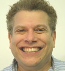
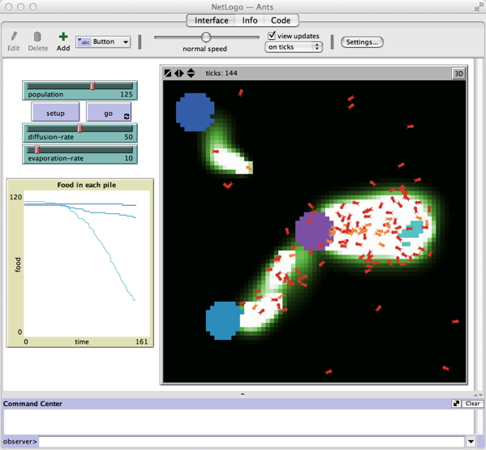

NetLogo in Science, Education, and Policy

NetLogo developer Uri Wilensky
by Erin Kim
On the screen, computer-generated ants scramble to find food to take back to the next. When they succeed, they leave a pheromone trail, helping other ants find their way to the food. To the left of the display are buttons to manipulate the behavior of the system, including the number of ants and the rate of diffusion of the pheromones. At first glance, it all looks very similar to a video game.

The program, NetLogo, was created by Uri Wilensky, a Northwestern University professor and a member of the Northwestern Institute on Complex Systems. NetLogo is a computer program that allows the rapid development of simulations of emergent behavior in systems of many agents, such as ant food-collecting behavior and predator-prey relationships in an ecosystem. Designed for simplicity, NetLogo intends to appeal to a wide audience, whether young middle school students dipping their toes into science or advanced researchers trying to demonstrate their theories.
Wilensky, a Professor of Learning Sciences and Computer Science, started NetLogo in the '90s, though the concept had been developing before then.
As a graduate student, Wilensky taught undergraduate mathematics courses at Harvard. Though he received feedback that he was doing a great job, Wilensky said he "had a terrible feeling that the students weren't truly understanding the material."
In graduate school, he met Benoit Mandelbrot, the originator of fractals, who was using computers to draw beautiful fractal patterns. Wilensky learned to program fractals and, in doing so, realized the power of computers to enable quick and deep exploration of mathematics. Wilensky realized that computers could become a learning tool for virtually anyone, so he started studying computer science and went back to school at MIT for another degree in 1988.
At MIT, he studied with Seymour Papert who was using the computer language Logo to enable children to learn mathematics by programming computers.
During his time at MIT, Wilensky and a colleague developed an educational environment, StarLogo, to create models and run math and science simulations on a supercomputer. "We were sort of laughed at," he said. "This was a multi-million dollar supercomputer; the idea that it would be used for education seemed ludicrous."
StarLogo was one of the first "agent-based modeling" (ABM) environments that enabled modelers to give depictions, properties and behaviors to computer "agents," entities that are created in computer code and depicted on a computer screen.
Wilensky started giving lectures about the use of agent-based modeling in education in front of physicists, chemists and biologists, expecting them to be skeptical of the non-traditional approach to practicing and learning science. However, on the whole, the approach was well received, as the scientists saw the potential of ABM for both education and research. "Scientists saw the potential of being able to take an 'emergent' perspective, that is to see how micro-level interactions can generate large-scale patterns. Those conversations convinced me that ABM could both be transformative in education, and that all of science could be restructured to be thought of in an emergent massively parallel agent-based way," Wilensky said. "So I resolved to design NetLogo, a more complete ABM environment, to be a general purpose system that could be used for education, research, science and policy."
Wilensky was most concerned with making a low threshold, high ceiling product -- meaning he wanted it to be easily used and understood by anyone with any level of computer knowledge yet still apply to science with high-level concepts.
"Most scientists aren’t great programmers, so it’s helpful for them to have a way of experimenting on the computer without needing highly technical knowledge," the professor said. "And kids marveled at the fact that they could make things happen right away and yet do real science."
He officially released NetLogo in 1999, while he was teaching at Tufts University. A year later, Wilensky relocated to Northwestern University, bringing NetLogo and the Center for Connected Learning and Computer Based Modeling, where NetLogo was developed.
Since the move, NetLogo has greatly expanded. For example, the HubNet feature was added to allow many users to participate and collaborate in simulations. The audience has greatly broadened, expanding into more areas, especially in social science. NetLogo is used in thousands of classrooms at a wide range of educational levels. It is offered in several languages, including Chinese, Czech, Spanish and Japanese, and there are tens of thousands of users on every continent, in countries as diverse as Australia, Indonesia, Bulgaria, Norway, Venezuela, Rwanda and Namibia.
It was commonly thought that one tool could not be simultaneously useful for both scientists and younger students. Yet, even though middle school classrooms and scientific laboratories alike use NetLogo, it receives enthusiastic responses from both groups. Researchers use NetLogo for their publications, while many teachers find that young learners are more interested in science after using the program.
"We've seen this over and over again from thousands of communities and kids," Wilensky said. "You can gain a deeper understanding when you can grow a model in a computer.
The teachers we've worked with have seen large gains of understanding, plus increases in students' motivation and changes in their attitudes toward science."
Now the CCL director has about 20 students, colleagues and employees helping him with the project. In addition, NetLogo has started partnering with museums, allowing children to get a better understanding of an exhibit (such as an exhibit on evolution) by playing and working in the computerized modes. Over the next few years, Wilensky hopes to expand into more museums, but also develop NetLogo to run more smoothly in a Web browser that should make it even easier to use in schools.
"When I first started working on ABM, I thought I was designing a product primarily for educational purposes," the NetLogo founder said. "There were more specialized competitor products that were only in the science market. I didn't know that we would end up as leaders in both markets. But retrospectively, it makes sense that both markets needed a low-threshold way of doing science through the computer."
He hopes that because the program is easy to use, people will use it to effect change in the world -- not only in terms of education, but also in policy and civic discourse.
"This is a new way of understanding the world and it can radically transform lots of domains of knowledge from inaccessible to accessible," Wilensky said. "At a time when we see so many policy decisions requiring understanding of science and big data, our hope is that these types of tools will be used in public discourse, as methods of making informed arguments, and by citizens as evidence for their claims."

NetLogo wolf-sheep predation